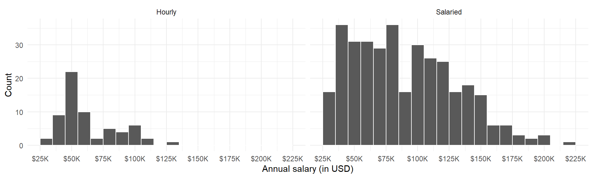
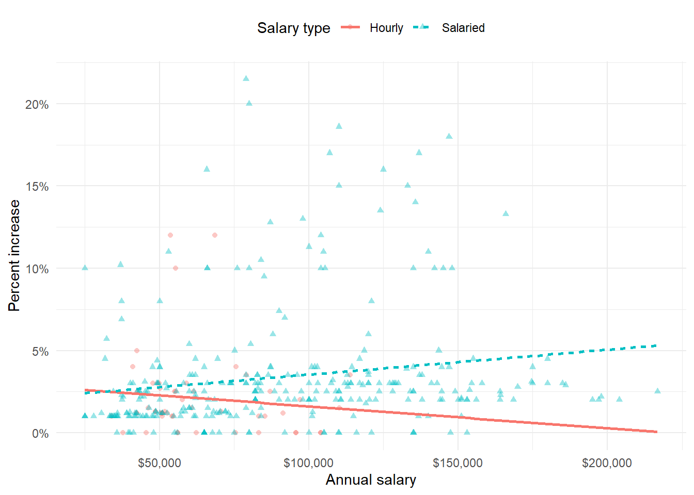
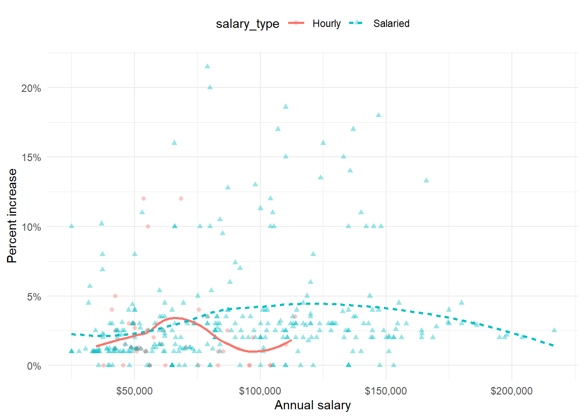
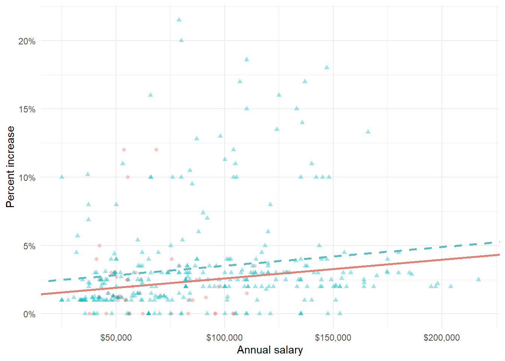
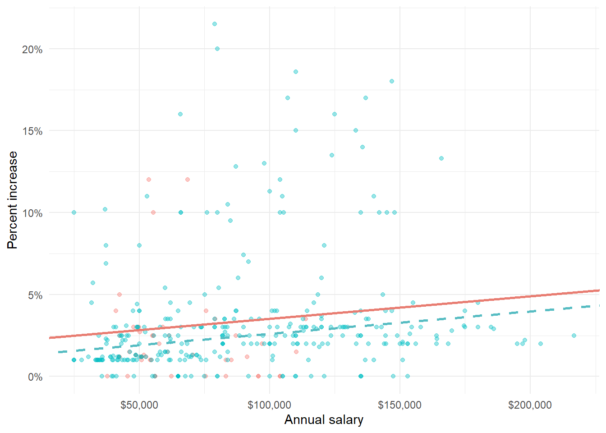
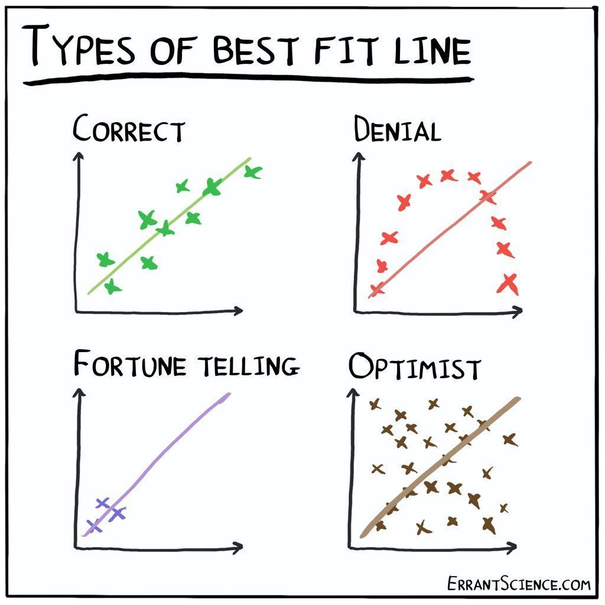

# A tibble: 409 x 4
percent_incr salary_type annual_salary performance_rating
<dbl> <chr> <dbl> <chr>
1 1 Salaried 25000 High
2 1 Salaried 25000 Successful
3 1 Salaried 25000 High
4 1 Hourly 33987. Successful
5 NA Hourly 34798. High
6 NA Hourly 35360 <NA>
7 NA Hourly 37440 <NA>
8 0 Hourly 37814. <NA>
9 4 Hourly 41101. Top
10 1.2 Hourly 42328 <NA>
# i 399 more rowsAnalítica de Datos
Parcial II
Before you start the exam, read all the questions and, according to your judgment, open the slides and scripts that you find useful. No one should have their email open for more than 5 minutes unless you are sending the exam with all the answers. The use of ChatGPT (or any other AI website) is not allowed. All answers must be submitted in a PDF document created in Quarto or in an R Script with comments. As mentioned earlier, those who submit their answers in Quarto will receive a +0.3 bonus on the exam.
For those submitting the document in Quarto, I suggest first writing the code in an R Script, verifying that it runs correctly, and then transferring the answers to the .qmd document. Do not include the code for the graphs in the final document; for the rest of the answers, it is mandatory to include the code.
The answers will be evaluated based on clarity, accuracy, and quality of the analysis. Graphs and tables will account for only half of the score. You have 2 hours to complete the exam, so there is enough time to shorten any answer that is difficult to summarize. Each question is worth 0.5 points of the final grade.
All the best!
Preliminares
Context
In 2021, Blizzard Entertainment initiated a data analysis project on employee salary increases. This was in response to growing concerns about compensation practices in the video game industry, triggered by an anonymous Excel file that revealed internal salaries. The goal was to identify potential disparities in salary adjustments across different employee groups and performance levels (Source: Blizzard Workers Share Salaries in Revolt Over Pay).
Assume you are a member of this team. The name of the data frame used for this analysis is blizzard_salary and the relevant variables are:
percent_incr: Raise given in July 2020, as percent increase with values ranging from 1 (1% increase) to 21.5 (21.5% increase)salary_type: Type of salary, with levelsHourlyandSalariedannual_salary: Annual salary, in USD, with values ranging from $25,000 to $216,856.performance_rating: Most recent review performance rating, with levelsPoor,Successful,High, andTop. ThePoorlevel is the lowest rating and theToplevel is the highest rating.
The top ten rows of blizzard_salary are shown below:
Descriptive Part
Question 1
Figure 1 (a) and Figure 1 (b) show the distributions of annual salaries of hourly and salaried workers. The two figures show the same data, with the facets organized across rows and across columns. Which of the two figures is better for comparing the median annual salaries of hourly and salaried workers. Explain your reasoning.


Question 2
Suppose your teammate wrote the following code as part of their analysis of the data. They then printed out the results shown below. Unfortunately one of the number got erased from the printout, it’s indicated with _____ below.
# A tibble: 2 x 3
salary_type mean_annual_salary median_annual_salary
<chr> <dbl> <dbl>
1 Hourly 63003. 54246.
2 Salaried 90183. _____Which of the following is the best estimate for that erased value?
- 30,000
- 50,000
- 80,000
- 100,000
Question 3
Which annual salary distribution has a higher standard deviation?
- High performance workers
- Poor performance workers
- Roughly the same
Question 4
Create a new variable increase that represents the increase in salary that workers would have after 2020 (the annual salary would be multiplied by (percent_incr/100)). One of your colleagues asks you to plot the scatterplot between the two variables. What would be your conclusion about the relationship between the base salary and the increase based on the graph?
Inferencial Part
Question 5
Propose a situation in which you need to calculate a confidence interval for one of the variables, calculate the interval, and provide the corresponding analysis that answers that question.
Question 6
The boss of the team ask you to fit a model for predicting raises (percent_incr) from salaries (annual_salary). We’ll call this model raise_1_fit. The model follows the following equation:
\[\widehat{\text{Percent Increase}}=\hat{\beta_0}+\hat{\beta_1}\times \text{Annual Salary}\]
Which of the following is the best interpretation of the slope coefficient?
- For every additional $1,000 of annual salary, the model predicts the raise to be higher, on average, by 1.59%.
- For every additional $1,000 of annual salary, the raise goes up by 0.0159%.
- For every additional $1,000 of annual salary, the model predicts the raise to be higher, on average, by 0.0159%.
- For every additional $1,000 of annual salary, the model predicts the raise to be higher, on average, by 1.83%.
Question 7
Does the model raise_1_fit satisfy the conditions of linearity, constant variance, and normality of errors? Use graphs to support your answer.
Question 8
Two of your colleagues propose two different models to predict percent_incr. The first model, which they call model_1, makes the estimation using annual salary and a dummy variable for whether the worker has a salaried contract, as follows:
\[\widehat{\text{Percent Increase}}=\hat{\beta_0}+\hat{\beta_1}\times \text{Annual Salary}+\hat{\beta_2}\times \text{Salaried}\]
On the other hand, the second model called model_2, would use dummy variable for each category in performance_rating following:
\[\widehat{\text{Percent Increase}}=\hat{\beta_0}+\hat{\beta_1}\times \text{Annual Salary}+\hat{\beta_2}\times \text{Poor}+\hat{\beta_3}\times \text{Succesful} +\hat{\beta_4}\times \text{Top}\]
Which of the two models would you choose, and what would be your criterion?
Question 9
The tidy model output for the raise_2_fit model you fit is shown below.
# A tibble: 5 x 5
term estimate std.error statistic p.value
<chr> <dbl> <dbl> <dbl> <dbl>
1 (Intercept) 3.52 0.515 6.84 5.01e-11
2 annual_salary 0.0000102 0.00000443 2.30 2.20e- 2
3 performance_ratingPoor -4.07 1.42 -2.86 4.55e- 3
4 performance_ratingSuccessful -2.40 0.397 -6.03 5.12e- 9
5 performance_ratingTop 2.99 0.714 4.19 3.77e- 5When your teammate sees this model output, they remark “The coefficient for performance_ratingSuccessful is negative, that’s weird. I guess it means that people who get successful performance ratings get lower raises.” How would you respond to your teammate?
Question 10
Suppose we fit a model to predict percent_incr from annual_salary and salary_type. A tidy output of the model is shown below.
# A tibble: 3 x 5
term estimate std.error statistic p.value
<chr> <dbl> <dbl> <dbl> <dbl>
1 (Intercept) 1.22 0.572 2.13 0.0335
2 annual_salary 0.0000141 0.00000470 2.99 0.00294
3 salary_typeSalaried 0.900 0.544 1.65 0.0993 Which of the following visualizations represent this model? Explain your reasoning.




Bonus (0.5)
The cases ‘Denial’ and ‘Fortune Telling’ in the graph below illustrate two common problems when estimating a regression line. Explain in your own words what these two problems consist of.
